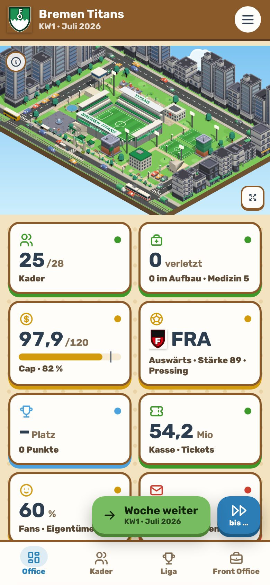
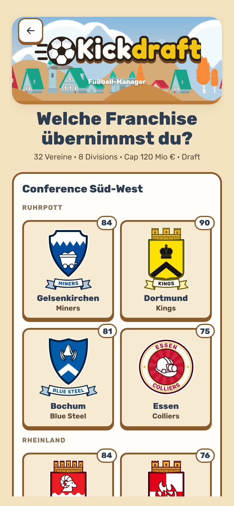
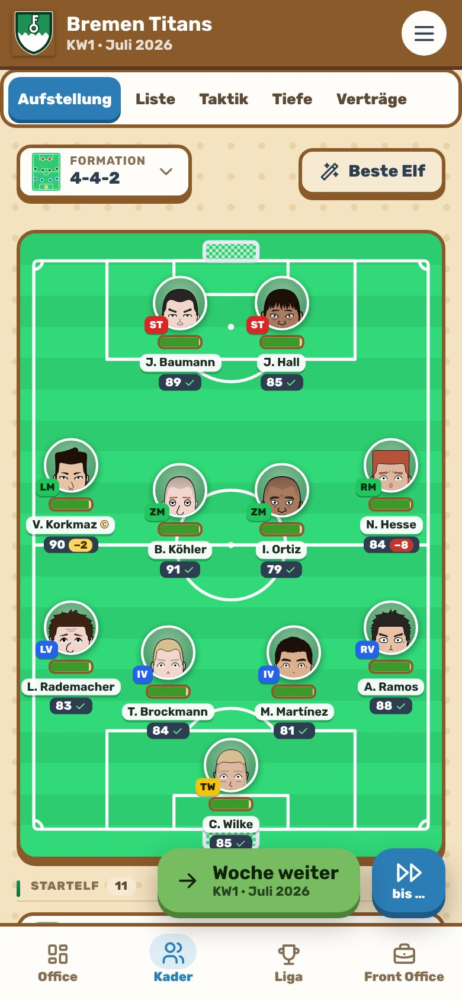
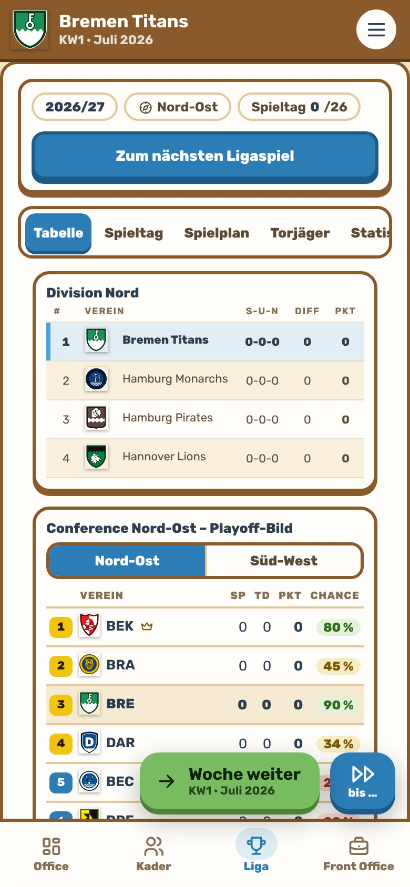

Dein Verein. Dein Draft. Deine Dynastie.
Kickdraft ist ein Fußball-Manager mit den Regeln der großen US-Ligen: 32 Franchises, kein Abstieg, ein harter Salary Cap, Talente nur über den Draft und am Ende Playoffs um die Meisterschaft.
Bald bei Google PlayKostenlos · ohne Konto · spielbar ohne Internet

32
Franchises, kein Abstieg
Zwei Conferences, acht Divisions, 26 Spieltage. Jeder Verein kann jedes Jahr oben angreifen.
120 Mio €
Harter Salary Cap
Verträge, Handgeld und Dead Cap. Wer zu viel ausgibt, zahlt Jahre später dafür.
4 Runden
Draft statt Nachwuchs
Talente kommen nur über den Draft. Die Schwächsten wählen zuerst, Picks lassen sich tauschen.
14 Teams
Playoffs
Division-Sieger und Wildcards spielen um den Titel der Deutschen Kickdraft Liga.
So sieht es aus


